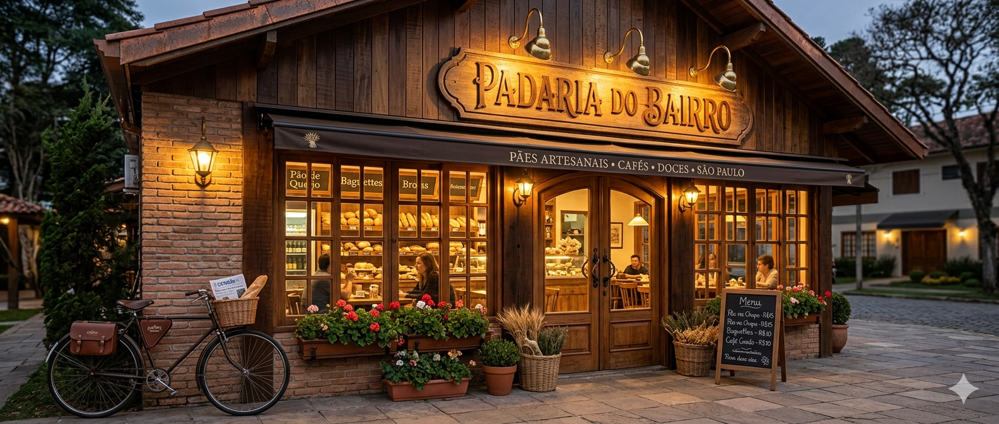
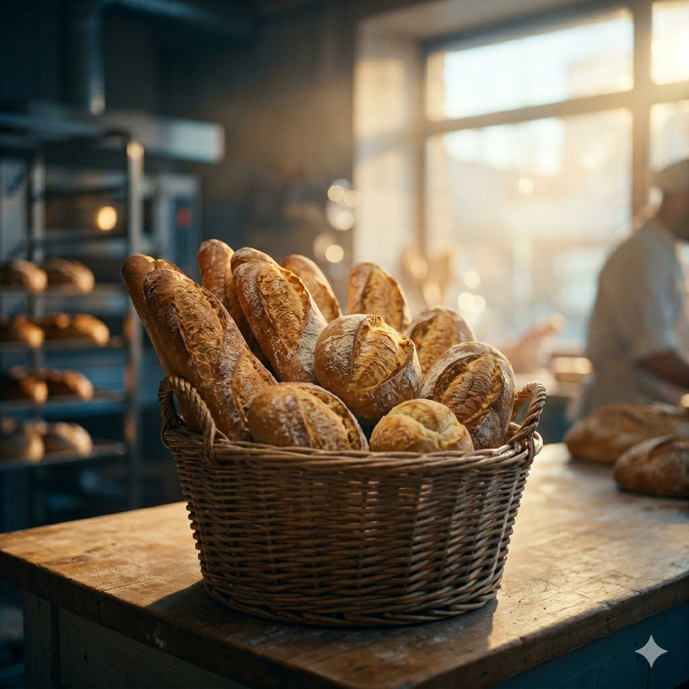
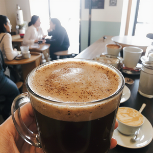
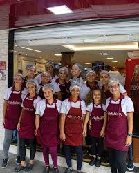

Nossa História
Desde 1995, transformando farinha e água em arte. Nossa missão é a qualidade absoluta e o respeito ao tempo da massa.

Cardápio Artesanal
| Categoria | Produto | Descrição | Preço |
|---|---|---|---|
| Pães | Pão Francês | Clássico, crocante e sempre quentinho | R$ 0,50/un |
| Pães | Sourdough Clássico | Fermentação natural de 48h | R$ 22,00 |
| Pães | Baguete Francesa | Massa leve com crosta firme | R$ 12,00 |
| Doces | Bolo de Chocolate | Massa fofinha com calda de brigadeiro | R$ 45,00 |
| Doces | Torta de Morango | Creme patissière com morangos frescos | R$ 15,00/fatia |
| Doces | Sonho de Creme | Tradicional com recheio artesanal | R$ 8,50 |
| Salgados | Coxinha de Frango | Com requeijão cremoso e massa de batata | R$ 9,00 |
| Salgados | Croissant de Presunto/Queijo | Massa folhada na manteiga francesa | R$ 16,00 |
| Salgados | Esfirra de Carne | Receita tradicional com tempero especial | R$ 7,50 |
| Cafeteria | Espresso Duplo | Grãos selecionados 100% Arábica | R$ 8,00 |
Nosso Ambiente e Produtos




Mestres Padeiros
Conheça quem coloca a mão na massa todos os dias para garantir o sabor artesanal.


Localização e Horários
Estamos localizados na Rua das Flores, nº 123, Bairro do Sol.
Horário de Funcionamento
| Dia da semana | Horário |
|---|---|
| Segunda-feira | 06:00 às 20:00 |
| Terça-feira | 06:00 às 20:00 |
| Quarta-feira | 06:00 às 20:00 |
| Quinta-feira | 06:00 às 20:00 |
| Sexta-feira | 06:00 às 20:00 |
| Sábado | 07:00 às 18:00 |
| Domingos e Feriados | 07:00 às 13:00 |